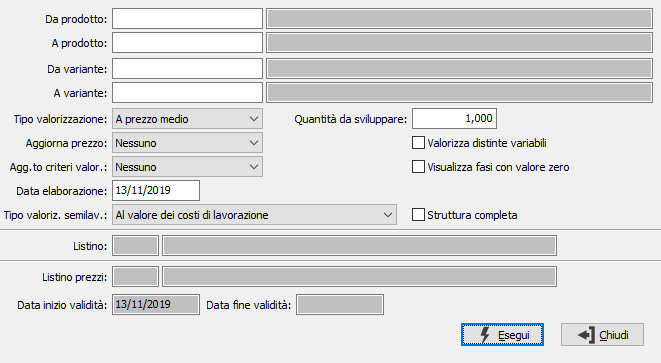

Stampa valorizzazione distinta base
La procedura consente di effettuare la stampa di un report relativo alla valorizzazione della distinta base in relazione ai parametri richiesti. Nel report vengono riportati i componenti valorizzati in relazione al criterio scelto, eventuali costi di produzione e costi derivanti da lavorazioni fino alla determinazione del prezzo di vendita.

DA PRODOTTO: codice dell'articolo, presente in anagrafica Prodotti, da cui si desidera iniziare l'elaborazione. Confermando a vuoto, la selezione inizia con il primo prodotto valido. Sul campo è attiva la ricerca (F9) sull’anagrafica prodotti.
A PRODOTTO: codice dell'articolo, presente in anagrafica Prodotti, con cui si desidera terminare l'elaborazione. Confermando a vuoto, la selezione termina con l’ultimo valido. Sul campo è attiva la ricerca (F9) sull’anagrafica prodotti.
TIPO VALORIZZAZIONE: definisce il metodo di valorizzazione del componente. Valori possibili:
Prezzo medio
Costo ultimo carico
Costo di mercato
Prezzo di vendita
Prezzo di listino
Come stabilito in distinta base
quantità da sviluppare: quantità di composto da utilizzare per il calcolo della valorizzazione.
AGGIORNA PREZZO: definisce il metodo di aggiornamento del prezzo del prodotto. Valori possibili:
Nessuno
Prezzo di vendita
Prezzo di listino
Prezzo di vendita e listino
Costo di mercato
VALORIZZA DISTINTE VARIABILI: definisce se deve essere effettuata la valorizzazione anche per le distinte variabili (casella con segno di spunta). In questo caso saranno valorizzati i componenti base.
VISUALIZZA FASI CON VALORE ZERO: Se spuntato mostrerà le fasi di lavorazione con valore zero.
AGGIORNAMENTO CRITERI VALORIZZAZIONE: definisce il metodo di aggiornamento dei criteri di valorizzazione, con quelli utilizzati nella valorizzazione. Valori possibili:
Nessuno
Aggiorna i criteri presenti nei componenti della distinta
Aggiorna i criteri presenti nei dettagli delle disposizioni (se presente la produzione)
Aggiorna componenti e dettagli disposizioni
DATA ELABORAZIONE: data dell'elaborazione, viene proposta la data di sistema. Nel caso di gestione delle date di validità sarà utilizzata come data di riferimento per la distinta base.
TIPO VALORIZZAZIONE SEMILAVORATI: Definisce il metodo di calcolo del prezzo per i semilavorati; utilizzato in prima nota di magazzino, valorizzazione magazzino e procedure di produzione per determinare il valore di un semilavorato. Valori possibili:
Standard: utilizza il tipo di calcolo definito in distinta base
Al valore delle materie prime: utilizza come prezzo il valore derivante dalla somma dei costi dei componenti.
Al valore dei costi di lavorazione: utilizza come prezzo il valore dalla somma dei costi dei componenti aumentato dei costi di lavorazione.
Al valore dei costi di produzione: utilizza come prezzo il valore dalla somma dei costi dei componenti aumentato dei costi di lavorazione e dei costi di produzione.
STRUTTURA COMPLETA: attivo solo per valorizzazioni di tipo non standard, consente di aggiungere la stampa dei componenti dei semilavorati valorizzati (casella con segno di spunta).
LAVORANTE: eventuale codice del lavorante da utilizzare per l'assegnazione delle lavorazioni. Il campo è presente solo se è stata attivata la gestione del lavorante sulla scheda di lavorazione in configurazione. Sul campo sono attive le funzioni di ricerca (F9) sulla tabella lavoranti.
In relazione a quanto inserito possono essere attivati anche i seguenti parametri:
LISTINO: codice del listino prezzi da utilizzare per ricercare il costo del componente. Sul campo sono attive le funzioni di ricerca (F9) sulla tabella listini.
LISTINO PREZZI: codice del listino prezzi da utilizzare per aggiornare il prezzo del prodotto. Sul campo sono attive le funzioni di ricerca (F9) sulla tabella listini.
DATA INIZIO VALIDITÀ: definisce la data di inizio validità da utilizzare per l'aggiornamento del prezzo del prodotto sull listino.
DATA FINE VALIDITÀ: definisce la data di fine validità da utilizzare per l'aggiornamento del prezzo del prodotto sull listino.